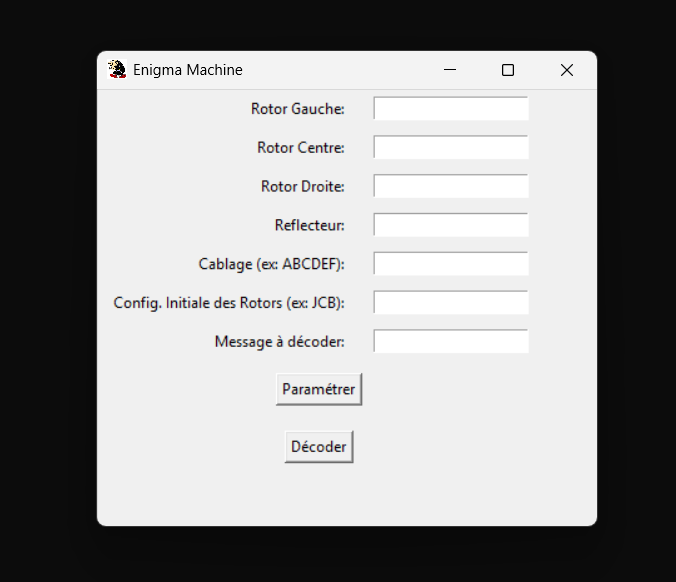

Programmation
Mon intérêt pour la programmation a commencé au lycée, avec une progression rapide grâce à la pratique de projets personnels et académiques.
Python : Machine Enigma
Pour mon projet Python, j’ai recréé la célèbre Machine Enigma avec une interface graphique minimaliste. Ce projet m’a permis de découvrir la programmation graphique et de visualiser le chiffrement et le déchiffrement en temps réel.
 Télécharger le projet (.zip)C# : RPG 2D - Yggdrasil Chronicle
En C#, j’ai mené le développement du RPG 2D Yggdrasil Chronicle sous Unity. Ce projet m’a permis de respecter un cahier des charges, de travailler en équipe, de gérer les deadlines et de préparer une soutenance. La création du gameplay, des quêtes et de l’univers graphique a été réalisée par notre équipe. Le projet est encore en développement.
C : Projet OCR
Je travaille actuellement sur un projet OCR en C, visant à développer une IA capable de corriger automatiquement des sudokus. Le projet est en cours de développement mais présente un fort potentiel.
[Image en cours de réalisation]
Annexe : FemClicker (Réalité augmentée)
Projet expérimental en réalité augmentée, FemClicker m’a permis d’explorer des concepts créatifs et techniques, bien que ce projet soit encore très ludique et non destiné à un usage professionnel.